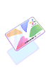
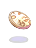
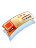
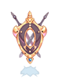
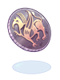
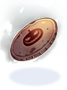
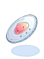
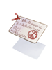

Introduction to NovaRO

|
| Portuguese |
Welcome to NovaRO!
Nova Ragnarok Online is a Renewal private server with a myriad of official features and exclusive customization. Here you will be introduced to some of them.
Basic information and details about the server such as rates, max stats, and max level can be found in the Server Information page.
If this is your first time playing Ragnarok Online, we recommend you take a look at Introduction to Ragnarok Online or if you are a pre-renewal warrior, the Introduction to Renewal page will help you get more up-to-date.
NovaRO Community
Wiki
The NovaRO wiki is a community-maintained wiki, and the main source for any information about the server, be it guides, information about in-game content, systems and more.
Most important pages can be found in the Main Page. If you were not able to find what you were looking for, use the search bar at the top right of the wiki.
Forums
The NovaRO Forum is the place to get up-to-date with new patches, make suggestions, report bugs or request Staff support.
Discord
The NovaRO Discord server is the main hub outside the game for interacting with other players through general discussion, game advice and more.
Frequently Asked Questions
Main Page: FAQ
With so many new things to learn, it is common to feel lost and confused at the start. Fear not, as the FAQ page will most definitely clear at least some questions you may have when starting.
If your queries are still unanswered by the FAQ page, asking around in-game or in Discord is always a valid alternative.
Player Commands
Main Page: Player Commands
Like most private servers, NovaRO players have a plethora of commands at their disposal, from database search for items and monsters, market search and general convenience.
Players can also make use of NovaExt to have access to even more features, such as FPS and ping displays, range and buff indicators, turbo and fast refresh.
The Main Office
Main Page: Main Office
The Prontera's Main Office is a massive building divided in five distinct floors, where lots of convenience NPCs reside. You can quickly warp to its entrance with @go 50.
Currencies
The following table lists currencies used in NovaRO, how they are obtained, and what can be purchased with them.
| Currency | Obtainable from | Usage |
|---|---|---|
|  Nova Points |
|
|
|  Gold Coins |
|
|
|  Event Tickets |
|
|
| Endeavor Tokens |
| |
|  Valor Badges |
| |
|  Siege Tokens |
| |
|  Seasonal Event Currency |
| |
|  Monster Coupons |
|

Official and Custom Content
Our developers work hard every day to bring the latest official content from the kRO server and fine-tune them to ensure that they are balanced, free of bugs and fit well with the server.
Most official content gets ported to the server, including mechanics and systems, Instances, classes and class balancing, general patches and more.
From quality of life features to new maps and bosses with or even new methods of PVP, custom content also plays a big role in making NovaRO what it is. Some examples being:
- Monster Hunter: Fight powerful bosses to obtain powerful equipment.
- Ancient Juperos, Nightmare Toy Factory, Thanatos Tower (Hard), etc.: Custom end-game instances/areas that reward valuable equipment and Shadow Gears.
- Custom Headgear Quests: Quests for costumes and equipment.
- Draft War of Emperium: War of Emperium where new teams are drafted by Captains every WoE.
- King of Emperium: A Siege mode where many teams compete against each other in an arena to capture the Emperium.
- Valentine's Day, Summer Festival, Trickster King's Invasion and Helping Santa: Seasonal server-wide events.
- And many more!